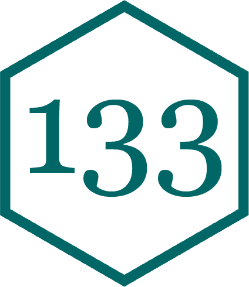

Unix Shell to Data Frames
A Path is a descripton of a file or directory’s location in the file system, written as a sequence of folder names that leads to it, separated by /
An Absolute Path is the complete, full address of a file or directory on a computer. Tip: These always start with / or ~/.
e.g. /Users/calvin/Documents/stat133, ~/Desktop/wallpapers
A Relative Path is an address of a file relative to the current shell location.
e.g. ../, stat133/projects, ../../fall-2025
pwd - Print working directory.
getwd() in Rls - Shows contents in current working directory.
list.files()cd <path> - Change curent directory to a provided directory.
setwd("<path>")cat <path> - Print contents of a provided file.
readLines("<path>")mkdir <path> - Create a directory. R equivalent not in scope.cp <path1> <path2> - Copy file(s) from path1 to path2. R equivalent not in scope.mv <path1> <path2> - Move file(s) from path1 to path2. R equivalent not in scope.*.02:00
names() or naming in c()dim(). All vector behavior still applies.
matrix() function. Fills column-wise by default.vec2 * 2 multiplies each element of vec2 by 2c(1, 2, 3, 4) - c(1, 2, 3) results in c(0, 0, 0, 3)c(c(1,2), TRUE) results in c(1, 2, 1)as.character(c(1, 2)) results in c("1", "2")[] with numeric indices, logical vectors, or names (if named)
vec[c(1, 3)], vec[vec > 2], named_vec["a"][row_indices, col_indices] OR (less commonly) single index.
mat[1:2, ], mat[, c(1, 3)], mat[mat > 5]
[1] "a" "1" "1.5" "TRUE"
[[1]]
[1] "a"
[[2]]
[1] 1
[[3]]
[1] 1.5
[[4]]
[1] TRUEA list is a non-atomic vector that can contain:
Created with list().
Single Bracket [ ]
ys[1], ys[c(T, F, T)]Double Bracket [[ ]]
ys[[1]], ys[[3]]Dollar Sign $
Write R code to extract the following from the list lst:
02:00
[1] "Small sample - use t-distribution"[1] "Small sample - use t-distribution."ifelse(test, yes, no) is a vectorized version of if-else statements.[1] "odd age" "even age" "odd age" "even age"[1] "P"
[1] "NP"
[1] "P"
[1] "P"[1] "P" "NP" "P" "P" function() keyword.Create an R function that iterates through x and prints:
Fruit 1: apple
Fruit 2: banana
Halfway there!
Fruit 3: cherry
Fruit 4: peach
02:00
A data structure for storing categorical data. Stores the values in an integer vector and adds a levels attribute to map integers to character strings. Created with factor().
[1] A F NP A P B- B+ B+ B- A- C A- B C+ C- D A
Levels: A A- B B- B+ C C- C+ D F NP PWarning: NAs introduced by coercion [1] NA NA NA NA NA NA NA NA NA NA NA NA NA NA NA NA NA Length Class Mode
17 character character [1] 1 10 11 1 12 4 5 5 4 2 6 2 3 8 7 9 1 A A- B B- B+ C C- C+ D F NP P
3 2 1 2 2 1 1 1 1 1 1 1 [1] A F NP A P B- B+ B+ B- A- C A- B C+ C- D A
Levels: A < A- < B+ < B < B- < C+ < C < C- < D+ < D < D- < P < NP < Flevels and setting ordered=TRUE.A data frame is a named list of vectors of the same length. Holds attributes for (column) names, row.names, and its class, “data.frame”. Created with data.frame().
Address the limitations of matrices, allowing for different data types in each column.
Allow for easier data manipulation using packages like dplyr and tidyr.
name gender height weight
1 Anakin male 1.88 84
2 Padme female 1.65 45
3 Luke male 1.72 77
4 Leia female 1.50 49A modern reimagining of data frames provided by the tibble package. Tibbles are part of the tidyverse and offer enhanced printing, subsetting, and type consistency.
# A tibble: 4 × 4
name gender height weight
<chr> <chr> <dbl> <dbl>
1 Anakin male 1.88 84
2 Padme female 1.65 45
3 Luke male 1.72 77
4 Leia female 1.5 49